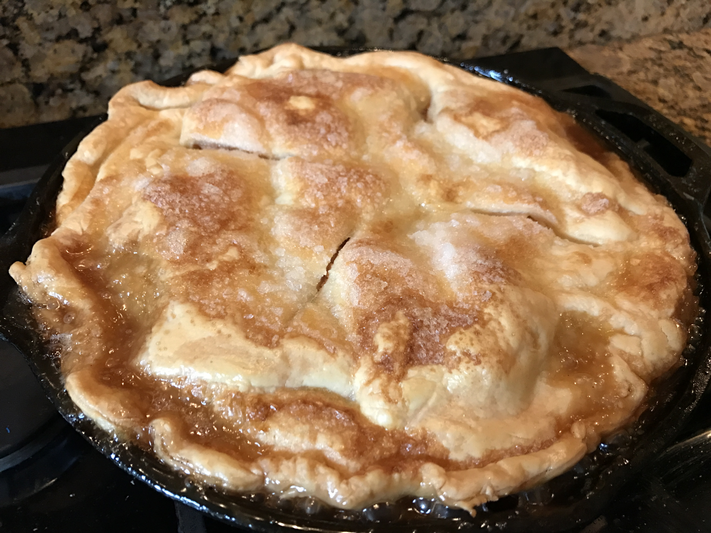

Stolen Apple Pie Recipe

Describe the Dish!
This three-layer apple pie is a Southern favorite! Full of a mother's love (and apples) that you can be sure you'll never get at home!
Ingredients
5 Granny Smith apples -- peeled, cored, quartered, and thinly sliced
3 (9 inch) refrigerated prerolled pie crusts
1 cup white sugar, divided
2 teaspoons ground cinnamon, divided
1 tablespoon butter, cut into small chunks
Directions
Preheat oven to 350 degrees F (175 degrees C).
Place 1/2 cup butter into a heavy cast iron skillet, and melt butter in the oven. Remove skillet and sprinkle with brown sugar; return to oven to heat while you prepare the apples.
Remove skillet, and place 1 refrigerated pie crust on top of the brown sugar. Top the pie crust with half the sliced apples. Sprinkle apples with 1/2 cup of sugar and 1 teaspoon of cinnamon; place a second pie crust over the apples; top the second crust with the remaining apples, and sprinkle with 1/2 cup sugar and 1 teaspoon cinnamon. Top with the third crust; sprinkle the top crust with 1/4 cup sugar, and dot with 1 tablespoon of butter. Cut 4 slits into the top crust for steam.
Bake in the preheated oven until the apples are tender and the crust is golden brown, about 45 minutes. Serve warm.